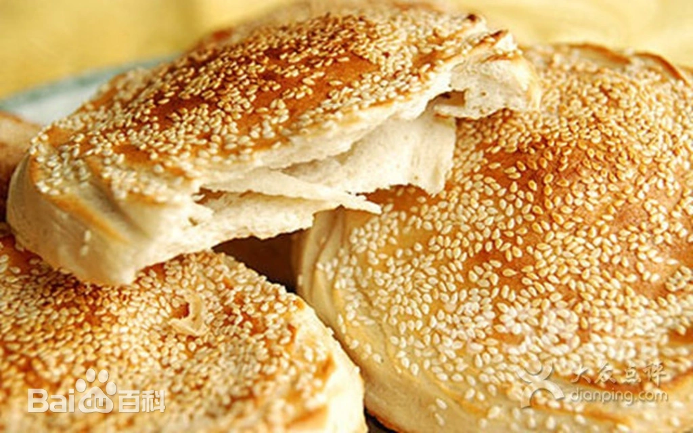

- 美食介绍： 曹县烧饼历史悠久，是山东菏泽的老少皆宜的传统名吃之一，曹县烧饼用料考究，烧饼用小麦精粉，经过和、盘、揉、摔等多道工序，包上用香油、盐调和的茴香、花椒等多种佐料而成的油瓤，再经过切花、盘沿、涂上一层糖稀、表面沾上芝麻仁，即贴入炉内烧烤。烤成的烧饼表面黄中透红，用手揭开，底儿、盖儿、芯儿层层分离，香气扑鼻，吃一口保准外酥里嫩，不硬不粘，老少皆宜。
- 美食故事： 曹县烧饼历史悠久，据传说当年孔子周游列国时走到曹县，人困马乏，饥不可耐，弟子们向当地百姓讨得些面粉，做成几个饼子，贴在反扣的铁锅上，下面点起炭火，饼子熟了竟然有阵阵的香味飘来，使孔子及众弟子大加赞赏，称其为美食，从此后历经沧桑，逐渐发展成风味独特的曹县烧饼。笔者有诗赞曰：圣人留下美食名，烧饼香飘曹县城。 各地游子齐夸赞，小吃享有四海名。